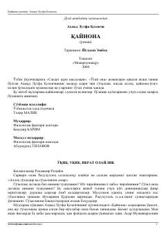

ҚQaynona va kelin munosabatlari hamda oilaviy axloqqa bag'ishlangan ibratli roman.
Ahmad Lutfiy Qozonchining ushbu romani oiladagi ma'naviy muhit, qaynona, o'g'il va kelin o'rtasidagi munosabatlar hamda ularning go'zal еchimiga bag'ishlangan. Asarda islomiy odob-axloq me'yorlari, oilaviy totuvlik va o'zaro hurmat kabi ezgu fazilatlar ta'riflanadi. Kitob har bir oilada o'qilishi tavsiya etiladigan tarbiyaviy ahamiyatga ega asardir.